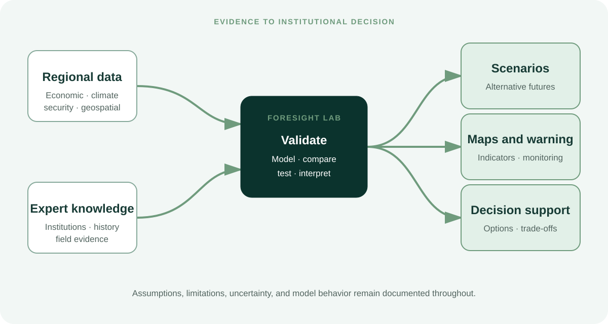

Strategic foresight
Horizon scanning, trend analysis, early indicators, scenario development, and assessment of emerging policy challenges.
Foresight and analytics
Data, models, and strategic foresight for assessing emerging risks and making decisions under uncertainty.
Foresight Lab is a permanent institute-wide unit within the Horn of Africa Institute. It supports the Institute’s three research programs and produces independent research on emerging risks, structural change, and decision-making under uncertainty.
The Lab combines regional knowledge with quantitative, computational, and scenario-based methods. Its role is to identify emerging trends and warning indicators, test assumptions, compare plausible futures, and clarify the conditions under which policies may succeed or fail.

Horizon scanning, trend analysis, early indicators, scenario development, and assessment of emerging policy challenges.
Data integration, statistical modeling, predictive analysis, pattern detection, model evaluation, validation, and responsible use.
GIS, remote sensing, spatial analysis, risk mapping, mobility patterns, infrastructure, and environmental monitoring.
Agent-based models, system dynamics, network analysis, simulation, causal analysis, and sensitivity testing.
Indicator design, event monitoring, structured risk assessment, escalation analysis, and systems that connect early warning with institutional response.
Policy simulations, scenario comparison, trade-off analysis, implementation assessment, and clear communication of uncertainty.
Models and forecasts inform judgment; they do not replace it. The Lab documents assumptions, identifies data limitations, evaluates uncertainty, and tests model behavior before drawing policy conclusions. Analytical outputs are interpreted alongside institutional knowledge, field evidence, and regional expertise.
Within Peace, Conflict, and Regional Security, the Lab supports early warning, geospatial risk analysis, and simulation of conflict dynamics. Within Economic Development and Governance, it supports forecasting, policy simulation, infrastructure analysis, and institutional diagnostics. Within Climate Resilience and Natural Resources, it supports remote sensing, hydrological modeling, vulnerability assessment, and compound-risk scenarios.
Research and analysis